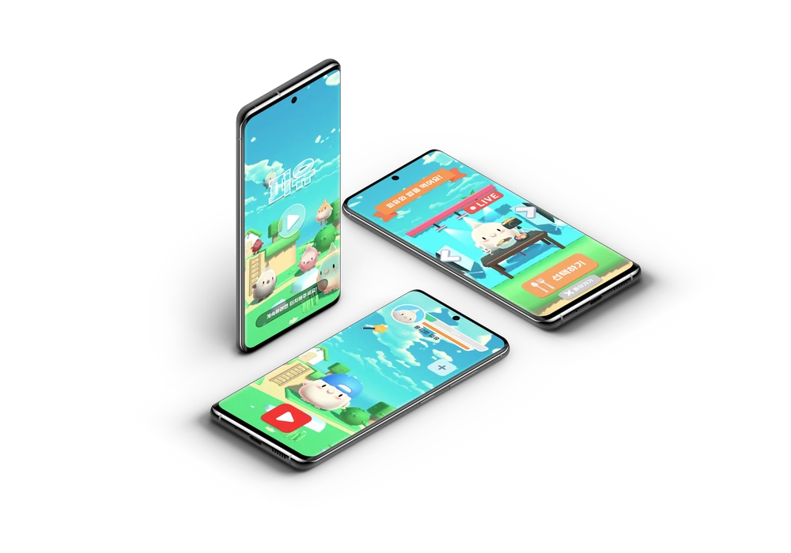

Service / Applied AI
PiYou
식사·양치 활동에 게임과 동작 인식을 결합한 아동 생활습관 개선 서비스입니다. 팀장으로 기획·발표와 백엔드·AI를 담당했습니다.

해결할 문제
아이의 식사와 양치를 일상에서 반복할 수 있는 활동으로 만들고자 했습니다. 팀은 게임과 동작 인식을 연결해 아이가 직접 참여하는 모바일 서비스를 기획했습니다.
본인 역할
팀장으로 기획과 발표를 맡고, 백엔드와 AI 적용에 참여했습니다. 전문가 자문과 사용자 관점을 서비스 기획에 연결하고, 구현한 기능과 팀의 결과를 발표했습니다.
AI 적용
MediaPipe를 Unity에 적용해 기기에서 동작을 인식하도록 구성했습니다. 손동작 인식 보완에는 Convex Hull 알고리즘을 적용하며 인식 결과를 앱의 동작과 연결했습니다.
백엔드 처리
사용자 상태를 정기적으로 갱신하는 처리와 JDBC 배치 설정을 활용했습니다. AI 인식과 서비스 데이터 처리를 함께 경험하며 앱과 백엔드의 역할을 나누어 다뤘습니다.